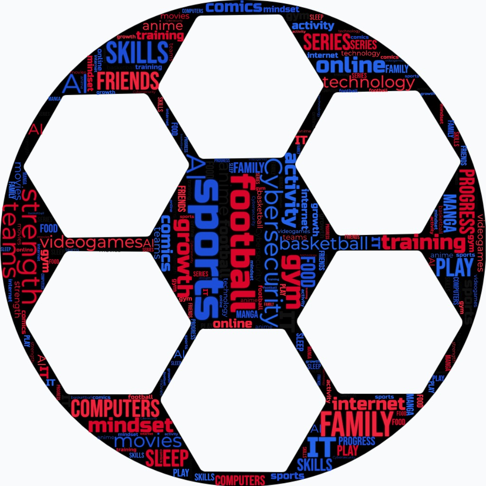

Cybersecurity graduate student at Houston Community College with hands-on experience in SOC operations, network defense, malware analysis, and penetration testing. Building toward a career at the intersection of cybersecurity and artificial intelligence.
I am a graduate student finishing my Associate of Cybersecurity at Houston Community College and transitioning into a Bachelor's in Artificial Intelligence next semester. My goal is to work my way up through the cybersecurity field — from analyst to engineer — and ultimately bridge the gap between cyber defense and AI-driven security systems.
Outside of academics I have spent years working in construction and painting, trades that taught me discipline, attention to detail, and how to solve problems under pressure — skills that translate directly into incident response and security work.
I am self-driven when it comes to technology. Long before formally studying cybersecurity I was troubleshooting computers for friends and family, learning operating systems from the inside out, and experimenting with code. That curiosity is what brought me here.
"I have always had this impression that in football, like in life, not everything is what it seems or what they want you to believe."— Lionel Messi
Messi's mindset — questioning the obvious, looking deeper, never accepting the surface — is exactly how I approach cybersecurity. Threats hide behind normal-looking traffic. Attacks disguise themselves as routine behavior. You have to look past what things "seem" to be.
// word cloud

Completing a rigorous two-year cybersecurity program covering threat detection, network defense, incident response, and security operations. This degree provides the technical foundation and hands-on lab experience required for entry-level SOC and security analyst roles.
Starting next semester, this program extends my technical foundation into machine learning, AI systems engineering, and intelligent automation — directly supporting my long-term goal of working at the intersection of AI and cybersecurity.
Completed five structured CyberOps guided labs covering core security operations concepts including network monitoring, log analysis, threat identification, and incident workflows. Each lab built progressively on the last, simulating real SOC analyst tasks inside a controlled virtual environment.
How to operate within a SOC workflow, navigate security tooling from the command line, and interpret network and system logs to detect anomalies. These labs gave me the procedural confidence to handle real analyst tasks.
In this XP Cyber Range challenge, I investigated and cleaned a compromised USB drive containing multiple infected files while preserving legitimate data. I identified and removed four distinct malware files — including a malicious .ppt.vsx, an autorun.inf, and infected executables in the tux\ and work\ directories — while maintaining file integrity checks at every step.
That malware removal is not just about deleting everything suspicious — it requires careful judgment to preserve safe files while eliminating threats. I learned how antivirus tools work at a practical level and the importance of verification checkpoints throughout incident response.
Analyzed two malicious PCAP files to identify and document real network attacks. The first was a TCP port scan where attacker IP 192.168.56.10 sent systematic SYN packets to discover open services. The second was an HTTP brute-force attack from 192.168.56.30 targeting port 80 on 192.168.56.20 with repeated login attempts. Documented full attack chain including attacker IPs, target IPs, methods, and forensic evidence.
Patterns matter more than individual packets. A single SYN packet looks harmless — hundreds in sequence reveal a port scan. This project sharpened my ability to reconstruct attack timelines from raw network data and produce clear incident documentation, which is a core SOC analyst skill.
Competed in the NCL Spring 2026 Gymnasium, a guided training competition simulating the NCL Games. Achieved 97% completion and 4,950 out of 5,360 possible points across all modules: Open Source Intelligence, Cryptography, Password Cracking, Forensics, Log Analysis, Network Traffic Analysis, Scanning & Reconnaissance, Web Application Exploitation, and Wireless Access Exploitation.
This competition exposed me to every major cybersecurity domain in a timed, competitive environment. Achieving 97% completion confirmed my readiness across a broad range of skills and showed me where I need to sharpen my accuracy — specifically in OSINT and cryptography challenges.
// upload resume.pdf to your GitHub repo alongside index.html to enable the download button
When I started, I could read a Wireshark capture but not interpret it. Now I can reconstruct an entire attack chain from raw packet data — identify the attacker IP, the target, the method, and the timeline — and document it clearly enough for a non-technical audience. I also developed real competence in malware triage, log analysis, and operating in a SOC-style environment through the NDG labs and XP Cyber challenges.
The hardest part was learning to think like an attacker while staying disciplined about documentation. In the USB malware challenge, my instinct was to delete anything suspicious — but the task required surgical precision: remove the malware, preserve the legitimate files, verify every step. That discipline does not come naturally. I had to slow down, be methodical, and trust the process. I still work on that in every lab.
I started thinking about cybersecurity as tools — learn Wireshark, learn Nmap, and you are good. What this program taught me is that tools are just tools. The real skill is the mindset: pattern recognition, skepticism, methodical analysis. The NCL competition especially showed me how broad the field is — OSINT, cryptography, forensics, web exploitation, wireless — they all require the same core discipline applied to different surfaces.
My accuracy in OSINT and cryptography challenges is where I have the most room to grow — I completed them but not with the precision I want. I am also actively working toward my CompTIA A+ and building toward the full trifecta. Long term, I want to understand how AI and machine learning intersect with threat detection — that is what is pulling me toward the AI bachelor's program next.